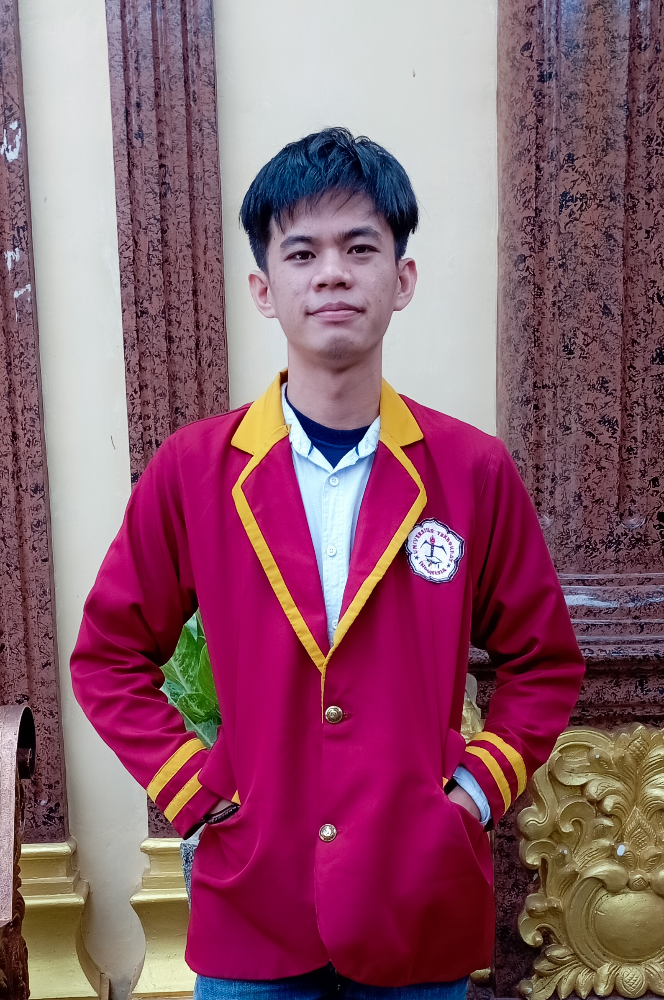

About Us
Welcome to Universitas Teknokrat Indonesia
History of Teknokrat

The Technocrat Education Institute, which has been appointed as a pilot model for the national level Double System Education Program (link and match), was established on 19 February 1986 using the name “Technocrat Course and Guidance” with the permission of the Ministry of Education and Culture (Depdiknas) of Lampung Province. This institution was founded by Nasrullah Yusuf with a capital of a used Bajaj motorcycle which was sold for IDR 1,600,000. At the beginning of its establishment, it only used one building that was rented for Rp. 1,000,000 per year, with equipment designed by themselves, namely two chalkboards, 50 wooden chairs, one administrative desk, and a manual typewriter.
The programs held at the beginning of its establishment were still limited to courses in English, Accounting, Tutoring, and Manual Typing. The learning community when it was first opened in March 1986 consisted of 32 residents learning English (2 classes), 22 residents studying Accounting, and 8 residents learning manual typing. In May 1986 Tutoring began with 3 participants. There were only two teaching staff at that time, namely Nasrullah Yusuf himself who taught English, Accounting, Typing, Tutoring and concurrently administration, and Mrs. Hernaini Nasrul teaches English and Manual Typing.
In 1995 the Technocrat Course and Guidance changed its name in the context of Indonesianization to become a Technocrat Educational Institution. This institution oversees two departments, namely the Department of Courses and Guidance, and the Department of Business and Management Education Institutions.
The Institute for Business and Management Education strives to continuously develop its educational programs. In 1996, the One-Year Technocrat Education Program began its learning process. Until now, the One-Year Technocrats Education Program has organized the One-Year Work Ready Education Program ECOMTEC (english computer technology information), computer accounting, computer graphic design, computer secretary, and English.
From the rapid developments and achievements that have been achieved by the Technocrat Education Institute, this Institute is trying to increase its participation in the intellectual life of the nation, one of the efforts made is to establish a Technocrat College in 2000. This college consists of three institutions, namely the College of Informatics and Computer Management (STMIK) Technocrats, Academy of Informatics and Computer Management (AMIK) Technocrats and College of Foreign Languages (STBA) Technocrats. The College of Informatics and Computer Management (STMIK) Technocrats has received an operational permit and legal entity status on February 8, 2001 and has registered status at the Directorate General of Higher Education, Ministry of National Education with Number; 13/D/O/2001. STMIK Teknokrat has two undergraduate study programs, namely Informatics Engineering (IT) and Information Systems (IS). Both study programs have been accredited by the National Accreditation Board for Higher Education (BAN PT). The Academy of Informatics and Computer Management (AMIK) Technocrats has obtained an operational license and legal entity status on June 9, 2000 and has registered status at the Directorate General of Higher Education, Ministry of National Education Number: 92/D/O/2000. AMIK Technocrats has three Diploma Three study programs, namely Computer Accounting (KA), Informatics Management (MI) and Computer Engineering (TK). Since 2003 until now, the three study programs have been accredited by the National Accreditation Board for Higher Education (BAN PT).
Universitas Teknokrat Indonesia
Pengenalan Universitas teknokrat Indonesia
Universitas Teknokrat IndonesiaFakultas Teknokrat
Terdapat 3 Fakultas yang ada di teknokrat
Faculty of Engineering and Computer Sciences
S1 - Information System, S1 - Information Technology, S1 - Electrical Engineering, S1 - Computer Engineering, S1 - Civil Engineering, S1 - Informatics, D3 - Accounting Information System.
Faculty of Economics and Business
S1 - Accounting, S1 - Management.
Faculty of Arts and Education
S1 - Mathematics Education, S1 - English Education, S1 - Physical Education, S1 - English Literature.
Beasiswa Prestasi
Beberapa Beasiswa dan Prestasi yang terdapat di Teknokrat
Contact
Kontak Mengenai Teknokrat
Location:
Jl. ZA. PagarAlam, No.9-11
Email:
uti@teknokrat.ac.id
Call:
(0721) 702022
Open Hours:
Mon-Sat: 07AM - 21PM
Biodata
Pembuat website
Biodata Yongky Permana Putra
Nama : Yongky Permana Putra
Tempat Tanggal Lahir : Karawang, 27 Januari 2003
Jurusan : Informatika
Hobi : Mendengarkan Musik